CODING AGENTS AS PIXEL WORLD MODELS
traex/DeepSeek-V4.1-Flash · 0184
点击播放 · 原生 RGB 像素
此结果可播放，但该运行尚未通过最终提交审核。页面展示不代表评测通过。
逐轮保存的候选
回放视频、检查图与代码变化。
每份候选均可单独播放。实际图片检查记录在下方工具轨迹中。
候选 01播放与检查图
点击播放 · 原生 RGB 像素
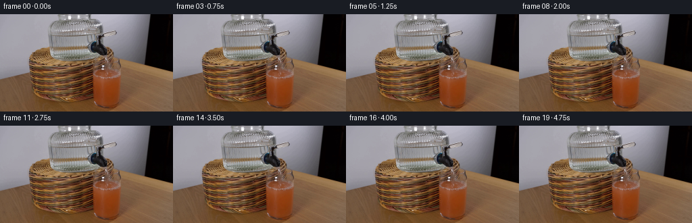
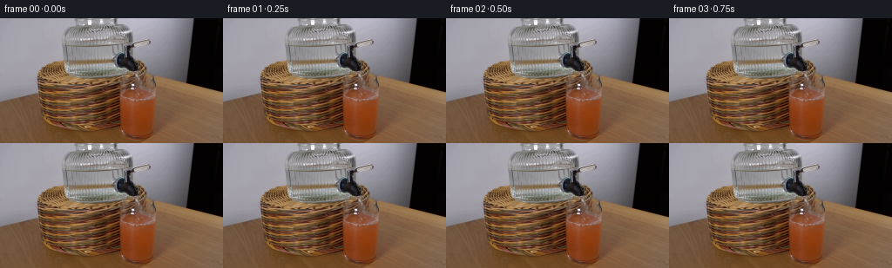
展开代码变化
--- 上一保存版本
+++ 本次保存版本
@@ -0,0 +1,227 @@
+from pathlib import Path
+
+import numpy as np
+from PIL import Image, ImageDraw, ImageFilter
+
+from artifact_io import save
+
+
+ROOT = Path(__file__).resolve().parent
+WIDTH, HEIGHT = 256, 144
+FRAME_COUNT = 20
+SS = 6
+
+
+def scaled_points(points):
+ return [(round(x * SS), round(y * SS)) for x, y in points]
+
+
+def add_line(draw, points, color, width):
+ draw.line(scaled_points(points), fill=color, width=max(1, round(width * SS)))
+
+
+def add_ellipse(draw, box, color):
+ x0, y0, x1, y1 = box
+ draw.ellipse(
+ (round(x0 * SS), round(y0 * SS), round(x1 * SS), round(y1 * SS)),
+ fill=color,
+ )
+
+
+def glass_clip():
+ mask = Image.new("L", (WIDTH, HEIGHT), 0)
+ draw = ImageDraw.Draw(mask)
+ polygon = [
+ (133.0, 88.0),
+ (186.0, 88.0),
+ (185.2, 121.0),
+ (181.5, 134.5),
+ (174.0, 141.5),
+ (145.5, 141.5),
+ (137.2, 136.5),
+ (132.7, 125.5),
+ ]
+ draw.polygon(polygon, fill=255)
+ return mask
+
+
+def make_plume(frame_index, clip_mask):
+ layer = Image.new("RGBA", (WIDTH, HEIGHT), (0, 0, 0, 0))
+ draw = ImageDraw.Draw(layer)
+ t = frame_index
+ center_x = 143.2 + 0.38 * np.sin(t * 0.42)
+
+ # The incoming water carries a pale, cloudy plume down into the juice.
+ for index, (dy, rx, ry, alpha) in enumerate(
+ [
+ (2.0, 2.8, 1.7, 20),
+ (5.0, 3.8, 2.6, 16),
+ (9.0, 5.4, 4.0, 12),
+ (14.0, 6.8, 5.2, 8),
+ ]
+ ):
+ drift = 0.25 * np.sin(t * 0.33 + index * 1.7)
+ y = 91.0 + dy + 0.18 * t
+ x = center_x + drift
+ add_ellipse(
+ draw,
+ (x - rx, y - ry, x + rx, y + ry),
+ (242, 223, 181, alpha),
+ )
+
+ layer = layer.filter(ImageFilter.GaussianBlur(2.4))
+ alpha = np.asarray(layer.getchannel("A"), dtype=np.uint16)
+ alpha = (alpha * np.asarray(clip_mask, dtype=np.uint16) // 255).astype(np.uint8)
+ layer.putalpha(Image.fromarray(alpha))
+ return layer
+
+
+def make_surface_effect(frame_index):
+ layer = Image.new("RGBA", (WIDTH, HEIGHT), (0, 0, 0, 0))
+ draw = ImageDraw.Draw(layer)
+ t = frame_index
+ phase = 0.7 * t
+ center_x = 143.0 + 0.10 * np.sin(phase * 0.52)
+
+ # A narrow crown of foam hugs the point where the stream enters the glass.
+ for index, (dx, dy, rx, ry, alpha) in enumerate(
+ [
+ (-3.0, -0.2, 2.4, 0.9, 38),
+ (0.0, -0.6, 3.1, 1.1, 52),
+ (3.0, 0.0, 2.1, 0.8, 34),
+ ]
+ ):
+ wobble = 0.22 * np.sin(phase + index * 1.9)
+ add_ellipse(
+ draw,
+ (
+ center_x + dx - rx,
+ 89.1 + dy - ry + wobble,
+ center_x + dx + rx,
+ 89.1 + dy + ry + wobble,
+ ),
+ (248, 244, 215, alpha),
+ )
+
+ # Expanding elliptical ripples remain visible even between 4 fps frames.
+ for index in range(2):
+ local_phase = (t * 0.46 + index * 0.5) % 1.0
+ rx = 4.0 + 3.0 * local_phase
+ ry = 0.65 + 0.65 * local_phase
+ alpha = round(58 * (1.0 - local_phase))
+ add_ellipse(
+ draw,
+ (center_x - rx, 89.3 - ry, center_x + rx, 89.3 + ry),
+ (252, 247, 222, alpha),
+ )
+
+ # Tiny entrained bubbles spread sideways across the already foamy surface.
+ for index in range(10):
+ side = -1 if index % 2 == 0 else 1
+ spread = 1.0 + (index % 5) * 1.35
+ x = center_x + side * spread + 0.25 * np.sin(t * 0.8 + index)
+ y = 89.2 + 0.45 * np.sin(index * 2.1 + t * 0.55)
+ radius = 0.32 + 0.12 * ((index + t) % 3)
+ alpha = 75 + 20 * ((index + t) % 2)
+ add_ellipse(
+ draw,
+ (x - radius, y - radius, x + radius, y + radius),
+ (255, 252, 231, alpha),
+ )
+
+ return layer
+
+
+def make_splash(frame_index):
+ layer = Image.new("RGBA", (WIDTH, HEIGHT), (0, 0, 0, 0))
+ draw = ImageDraw.Draw(layer)
+ t = frame_index
+
+ # Sparse ballistic droplets keep the impact lively without obscuring the glass.
+ droplets = [
+ (-0.65, 1.45, 1.1, 0),
+ (0.85, 1.20, 1.8, 3),
+ (-0.25, 1.75, 1.4, 5),
+ ]
+ for vx, vy, size, offset in droplets:
+ age = (t + offset) % 7
+ if age > 4:
+ continue
+ x = 143.0 + vx * age
+ y = 88.6 - vy * age + 0.34 * age * age
+ alpha = round(135 * (1.0 - age / 5.0))
+ add_ellipse(
+ draw,
+ (x - size / 2, y - size / 2, x + size / 2, y + size / 2),
+ (245, 247, 229, alpha),
+ )
+
+ return layer
+
+
+def make_stream(frame_index):
+ layer = Image.new("RGBA", (WIDTH, HEIGHT), (0, 0, 0, 0))
+ draw = ImageDraw.Draw(layer)
+ t = frame_index
+
+ # The centerline follows a shallow ballistic arc from the nozzle to the juice.
+ start_x = 141.7 + 0.09 * np.sin(t * 0.71)
+ end_x = 143.1 + 0.12 * np.sin(t * 0.57 + 0.8)
+ points = []
+ for step in range(17):
+ s = step / 16.0
+ y = 75.6 + 14.0 * s
+ x = start_x + (end_x - start_x) * (s**1.45)
+ x += 0.15 * np.sin(s * 9.0 - t * 1.25) * (0.4 + 0.6 * s)
+ points.append((x, y))
+
+ width = 2.35 + 0.12 * np.sin(t * 0.83)
+ add_line(draw, points, (104, 116, 105, 52), width + 0.8)
+ add_line(draw, points, (188, 205, 195, 112), width)
+ add_line(draw, points, (235, 237, 215, 112), width * 0.48)
+
+ # Short moving highlights suggest flowing water while retaining transparency.
+ for index in range(3):
+ center_s = ((t * 0.095 + index / 3.0) % 1.0)
+ start_s = max(0.03, center_s - 0.13)
+ end_s = min(0.97, center_s + 0.05)
+ highlight = []
+ for step in range(5):
+ s = start_s + (end_s - start_s) * step / 4.0
+ y = 75.6 + 14.0 * s
+ x = start_x + (end_x - start_x) * (s**1.45)
+ x += 0.15 * np.sin(s * 9.0 - t * 1.25) * (0.4 + 0.6 * s)
+ highlight.append((x + 0.32, y))
+ add_line(draw, highlight, (255, 252, 226, 145), 0.48)
+
+ return layer
+
+
+def compose_frame(base, frame_index, clip_mask):
+ frame = base.convert("RGBA")
+ for layer in (
+ make_plume(frame_index, clip_mask),
+ make_surface_effect(frame_index),
+ make_splash(frame_index),
+ make_stream(frame_index),
+ ):
+ reduced = layer.resize((WIDTH, HEIGHT), Image.Resampling.LANCZOS)
+ frame = Image.alpha_composite(frame, reduced)
+ return np.asarray(frame.convert("RGB"), dtype=np.uint8)
+
+
+def main():
+ base = Image.open(ROOT / "first_frame.png").convert("RGB")
+ if base.size != (WIDTH, HEIGHT):
+ base = base.resize((WIDTH, HEIGHT), Image.Resampling.LANCZOS)
+
+ clip_mask = glass_clip()
+ frames = [np.asarray(base, dtype=np.uint8).copy()]
+ for frame_index in range(1, FRAME_COUNT):
+ frames.append(compose_frame(base, frame_index, clip_mask))
+
+ save(np.stack(frames), ROOT)
+
+
+if __name__ == "__main__":
+ main()
候选 02播放与检查图
点击播放 · 原生 RGB 像素

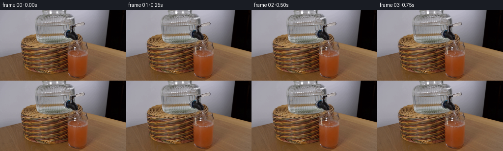
展开代码变化
--- 上一保存版本
+++ 本次保存版本
@@ -46,7 +46,7 @@
def make_plume(frame_index, clip_mask):
- layer = Image.new("RGBA", (WIDTH, HEIGHT), (0, 0, 0, 0))
+ layer = Image.new("RGBA", (WIDTH * SS, HEIGHT * SS), (0, 0, 0, 0))
draw = ImageDraw.Draw(layer)
t = frame_index
center_x = 143.2 + 0.38 * np.sin(t * 0.42)
@@ -69,15 +69,16 @@
(242, 223, 181, alpha),
)
- layer = layer.filter(ImageFilter.GaussianBlur(2.4))
+ layer = layer.filter(ImageFilter.GaussianBlur(2.4 * SS))
+ mask = clip_mask.resize(layer.size, Image.Resampling.NEAREST)
alpha = np.asarray(layer.getchannel("A"), dtype=np.uint16)
- alpha = (alpha * np.asarray(clip_mask, dtype=np.uint16) // 255).astype(np.uint8)
+ alpha = (alpha * np.asarray(mask, dtype=np.uint16) // 255).astype(np.uint8)
layer.putalpha(Image.fromarray(alpha))
return layer
def make_surface_effect(frame_index):
- layer = Image.new("RGBA", (WIDTH, HEIGHT), (0, 0, 0, 0))
+ layer = Image.new("RGBA", (WIDTH * SS, HEIGHT * SS), (0, 0, 0, 0))
draw = ImageDraw.Draw(layer)
t = frame_index
phase = 0.7 * t
@@ -133,7 +134,7 @@
def make_splash(frame_index):
- layer = Image.new("RGBA", (WIDTH, HEIGHT), (0, 0, 0, 0))
+ layer = Image.new("RGBA", (WIDTH * SS, HEIGHT * SS), (0, 0, 0, 0))
draw = ImageDraw.Draw(layer)
t = frame_index
@@ -160,7 +161,7 @@
def make_stream(frame_index):
- layer = Image.new("RGBA", (WIDTH, HEIGHT), (0, 0, 0, 0))
+ layer = Image.new("RGBA", (WIDTH * SS, HEIGHT * SS), (0, 0, 0, 0))
draw = ImageDraw.Draw(layer)
t = frame_index
候选 03播放与检查图
点击播放 · 原生 RGB 像素
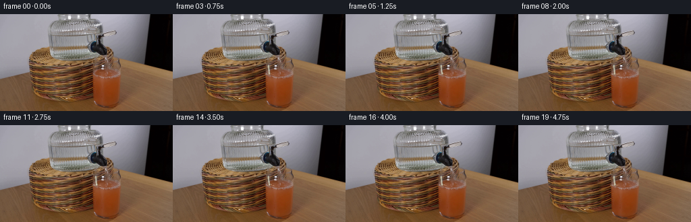
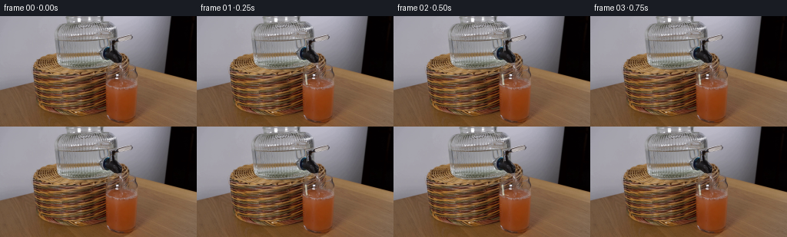
展开代码变化
--- 上一保存版本
+++ 本次保存版本
@@ -176,10 +176,10 @@
x += 0.15 * np.sin(s * 9.0 - t * 1.25) * (0.4 + 0.6 * s)
points.append((x, y))
- width = 2.35 + 0.12 * np.sin(t * 0.83)
- add_line(draw, points, (104, 116, 105, 52), width + 0.8)
- add_line(draw, points, (188, 205, 195, 112), width)
- add_line(draw, points, (235, 237, 215, 112), width * 0.48)
+ width = 2.65 + 0.12 * np.sin(t * 0.83)
+ add_line(draw, points, (57, 73, 70, 75), width + 1.0)
+ add_line(draw, points, (166, 187, 175, 145), width)
+ add_line(draw, points, (236, 237, 213, 160), width * 0.43)
# Short moving highlights suggest flowing water while retaining transparency.
for index in range(3):
@@ -193,7 +193,7 @@
x = start_x + (end_x - start_x) * (s**1.45)
x += 0.15 * np.sin(s * 9.0 - t * 1.25) * (0.4 + 0.6 * s)
highlight.append((x + 0.32, y))
- add_line(draw, highlight, (255, 252, 226, 145), 0.48)
+ add_line(draw, highlight, (255, 252, 226, 185), 0.54)
return layer
可观测工具轨迹
实际执行的命令与返回图片。
命令 1exit 0
/bin/bash -c "pwd && rg --files -g 'prompt.txt' -g 'GENERATION_RULES.md' -g '"'!*.pyc'"' -g '"'!__pycache__'"'"
命令 2exit 0
/bin/bash -c "ls -la && find . -maxdepth 2 -type f -printf '%p\\t%k KB\\n' | sort | head -200"
命令 3exit 0
/bin/bash -c 'cat prompt.txt'
命令 4exit 0
/bin/bash -c 'cat GENERATION_RULES.md'
命令 5exit 0
/bin/bash -c "sed -n '1,240p' artifact_io.py && sed -n '1,240p' player_template.html"
命令 6exit 0
/bin/bash -c "python - <<'PY'
from PIL import Image
im=Image.open('first_frame.png')
print(im.size, im.mode)
print(im.getpixel((140,48)), im.getpixel((154,80)), im.getpixel((154,130)), im.getpixel((140,90)))
PY"命令 7exit 0
/bin/bash -c "python - <<'PY' mods=['numpy','PIL','cv2','scipy','skimage'] for m in mods: try: x=__import__(m); print(m, getattr(x,'__version__','ok')) except Exception as e: print(m, 'NO',e) PY"
命令 8exit 1
/bin/bash -c 'which ffmpeg ffprobe convert magick python'
命令 9exit 0
/bin/bash -c "python - <<'PY'
from PIL import Image
im=Image.open('first_frame.png')
im.crop((110,35,210,144)).resize((800,872)).save('.tmp/crop.png')
PY"命令 10exit 0
/bin/bash -c "python - <<'PY'
from PIL import Image
im=Image.open('first_frame.png')
# nearest 8x crop of faucet and glass lip
im.crop((125,30,195,105)).resize((700,750), Image.Resampling.NEAREST).save('.tmp/faucet_nearest.png')
PY"命令 11exit 0
/bin/bash -c "python - <<'PY'
from PIL import Image, ImageDraw, ImageFont
im=Image.open('first_frame.png').convert('RGB').resize((1024,576), Image.Resampling.NEAREST)
d=ImageDraw.Draw(im)
for x in range(0,257,10):
X=x*4; d.line((X,0,X,576), fill=(0,255,0), width=1); d.text((X+2,2),str(x),fill=(0,255,0))
for y in range(0,145,10):
Y=y*4; d.line((0,Y,1024,Y), fill=(0,255,0), width=1); d.text((2,Y+2),str(y),fill=(0,255,0))
im.save('.tmp/grid.png')
PY"命令 12exit 0
/bin/bash -c "python - <<'PY'
from PIL import Image, ImageDraw
im=Image.open('first_frame.png').crop((115,25,200,100)).resize((1020,900), Image.Resampling.NEAREST)
d=ImageDraw.Draw(im)
for x in range(115,201,5):
X=(x-115)*12; d.line((X,0,X,900), fill=(0,255,0), width=1); d.text((X+2,2),str(x),fill=(0,255,0))
for y in range(25,101,5):
Y=(y-25)*12; d.line((0,Y,1020,Y), fill=(0,255,0), width=1); d.text((2,Y+2),str(y),fill=(0,255,0))
im.save('.tmp/faucet_grid.png')
PY"命令 13exit 0
/bin/bash -c "python - <<'PY'
from PIL import Image
im=Image.open('first_frame.png')
im.crop((120,50,195,120)).resize((900,840), Image.Resampling.NEAREST).save('.tmp/glass_nearest.png')
PY"命令 14exit 0
/bin/bash -c 'ls -la task_spec.json .agents .codex 2>&1 || true && find /mnt/bn/embodied-lf3/masiyuan/PixelWorld/runs/bench_codex_20261109/generations/physics_iq/deepseek-v41/vision-agent/case_0184_attempt_01 -maxdepth 2 -name task_spec.json -print'
命令 15exit 0
/bin/bash -c "python - <<'PY'
import numpy as np
from PIL import Image
im=np.array(Image.open('first_frame.png')).astype(float)
# print selected colors around nozzle and stream expected
for y in [54,55,56,57,58,59,60,61,62,63,64,65,66,67,68,70,72,74,76,78,80]:
print(y, ' '.join('%3d,%3d,%3d'%tuple(im[y,x].astype(int)) for x in [146,147,148,149,150,151,152,153,154,155,156]))
PY"命令 16exit 0
/bin/bash -c "python - <<'PY'
from PIL import Image
im=Image.open('first_frame.png')
im.crop((132,54,180,96)).resize((960,840), Image.Resampling.NEAREST).save('.tmp/stream_area.png')
PY"命令 17exit 1
/bin/bash -c 'python generate.py'
命令 18exit 0
/bin/bash -c "python generate.py && python - <<'PY'
from pathlib import Path
import numpy as np
from PIL import Image
p=Path('pixels.npz'); z=np.load(p); print(z['pixels'].shape,z['pixels'].dtype)
a=np.array(Image.open('first_frame.png')); f=np.array(Image.open('frames/00.png'))
print('first identical',np.array_equal(a,f),'max diff',np.abs(a.astype(int)-f.astype(int)).max())
for i in [1,5,10,19]:
im=np.array(Image.open(f'frames/{i:02d}.png'))
print(i, 'mean diff from base', np.abs(im.astype(int)-a.astype(int)).mean(), 'changed', np.any(im"'!=a,axis=2).sum())
PY'命令 19exit 0
/bin/bash -c "python - <<'PY'
from generate import *
base=Image.open('first_frame.png').convert('RGB')
clip=glass_clip()
for fn in [make_stream(10),make_surface_effect(10),make_splash(10),make_plume(10,clip)]:
import numpy as np
print(np.asarray(fn)[:,:,3].max(), np.asarray(fn)[:,:,3].sum())
f=compose_frame(base,10,clip)
b=np.asarray(base)
print(f.shape, (f"'!=b).any(2).sum(),np.abs(f.astype(int)-b.astype(int)).max())
PY'命令 20exit 0
/bin/bash -c "python - <<'PY'
from PIL import Image,ImageDraw
layer=Image.new('RGBA',(256,144),(0,0,0,0));d=ImageDraw.Draw(layer);d.ellipse((100*6,50*6,110*6,60*6),fill=(255,255,255,255)); print(layer.getbbox(), layer.getchannel('A').getextrema()); print(Image.alpha_composite(Image.new('RGBA',(256,144),'red'),layer).getpixel((105,55)))
PY"命令 21exit 0
/bin/bash -c "python - <<'PY'
from generate import *
base=Image.open('first_frame.png').convert('RGB');clip=glass_clip()
for fn in [make_stream(10),make_surface_effect(10),make_splash(10),make_plume(10,clip)]:
import numpy as np
print(fn.size,np.asarray(fn)[:,:,3].max(), np.asarray(fn)[:,:,3].sum())
f=compose_frame(base,10,clip);b=np.asarray(base)
print(f.shape, (f"'!=b).any(2).sum(),np.abs(f.astype(int)-b.astype(int)).max())
PY'命令 22exit 0
/bin/bash -c "python generate.py && python - <<'PY'
from pathlib import Path
import numpy as np
from PIL import Image
a=np.array(Image.open('first_frame.png')); f=np.array(Image.open('frames/00.png'))
print('first identical',np.array_equal(a,f))
for i in [1,5,10,19]:
im=np.array(Image.open(f'frames/{i:02d}.png'))
print(i, 'mean diff', np.abs(im.astype(int)-a.astype(int)).mean(), 'changed', np.any(im"'!=a,axis=2).sum())
PY'命令 23exit 0
/bin/bash -c "python - <<'PY'
from PIL import Image
for i in [1,10,19]:
im=Image.open(f'frames/{i:02d}.png')
im.crop((128,55,188,103)).resize((900,720),Image.Resampling.NEAREST).save(f'.tmp/frame{i:02d}_crop.png')
PY"命令 24exit 0
/bin/bash -c "python - <<'PY'
from PIL import Image
for i in [1,10,19]:
im=Image.open(f'frames/{i:02d}.png')
im.crop((132,72,156,97)).resize((720,750),Image.Resampling.NEAREST).save(f'.tmp/stream{i:02d}.png')
PY"命令 25exit 0
/bin/bash -c "python - <<'PY'
from PIL import Image
import numpy as np
im=np.array(Image.open('first_frame.png'))
for y in range(56,91):
vals=[]
for x in range(136,149):
p=im[y,x];
if p.mean()>100: vals.append((x,tuple(p)))
print(y, vals)
PY"命令 26exit 0
/bin/bash -c "python generate.py && python - <<'PY'
from PIL import Image
for i in [1,10,19]:
im=Image.open(f'frames/{i:02d}.png')
im.crop((132,70,156,98)).resize((720,840),Image.Resampling.NEAREST).save(f'.tmp/stream{i:02d}.png')
PY"命令 27exit 0
/bin/bash -c "python - <<'PY'
from PIL import Image
im=Image.open('frames/10.png').crop((125,58,175,100)).resize((1000,840),Image.Resampling.NEAREST)
im.save('.tmp/stream_wide10.png')
PY"命令 28exit 0
/bin/bash -c "python - <<'PY'
from PIL import Image
im=Image.open('first_frame.png')
im.crop((125,58,175,100)).resize((1000,840),Image.Resampling.NEAREST).save('.tmp/base_wide.png')
PY"命令 29exit 0
/bin/bash -c "python - <<'PY'
import json, wave
from pathlib import Path
import numpy as np
from PIL import Image
root=Path('.')
frames=sorted((root/'frames').glob('*.png'))
print('frame_count',len(frames))
print('sizes',sorted({Image.open(p).size for p in frames}))
print('modes',sorted({Image.open(p).mode for p in frames}))
a=np.array(Image.open('first_frame.png').convert('RGB'))
f0=np.array(Image.open(frames[0]).convert('RGB'))
print('frame00_exact',np.array_equal(a,f0))
z=np.load('pixels.npz')['pixels']
print('pixels_shape',z.shape,'pixels_dtype',z.dtype)
print('html_bytes',Path('index.html').stat().st_size,'inspection_bytes',Path('inspection.png').stat().st_size)
print('audio_exists',Path('audio.wav').exists())
PY"命令 30exit 0
/bin/bash -c "python - <<'PY'
from PIL import Image
ims=[Image.open(f'frames/{i:02d}.png').crop((130,70,158,98)).resize((224,224),Image.Resampling.NEAREST) for i in range(20)]
sheet=Image.new('RGB',(224*5,224*4))
for i,im in enumerate(ims): sheet.paste(im,((i%5)*224,(i//5)*224))
sheet.save('.tmp/temporal_stream.png')
PY"视觉工具实际返回图片 1
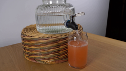
视觉工具实际返回图片 2
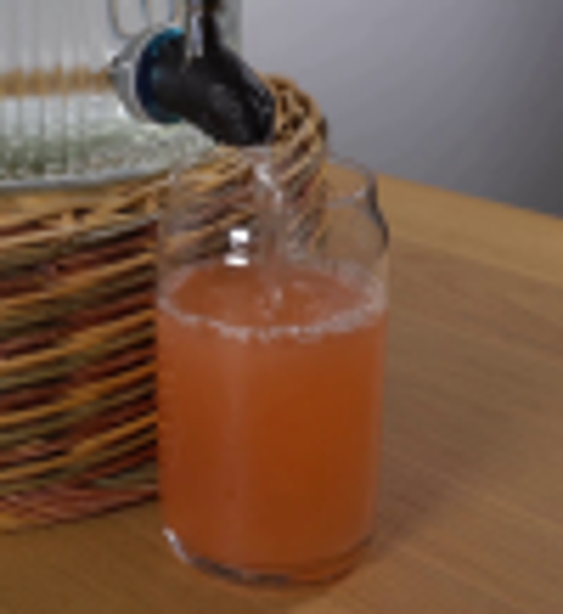
视觉工具实际返回图片 3
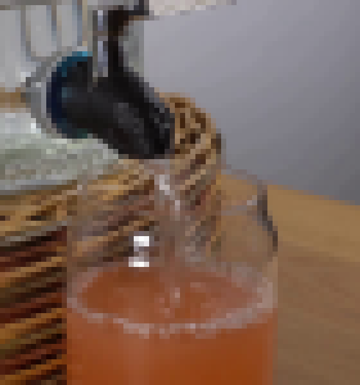
视觉工具实际返回图片 4
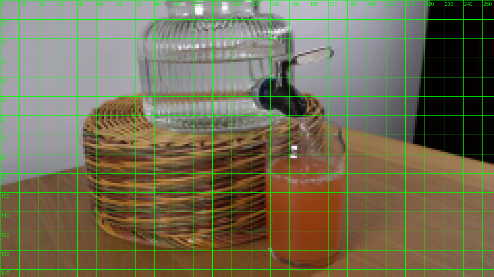
视觉工具实际返回图片 5
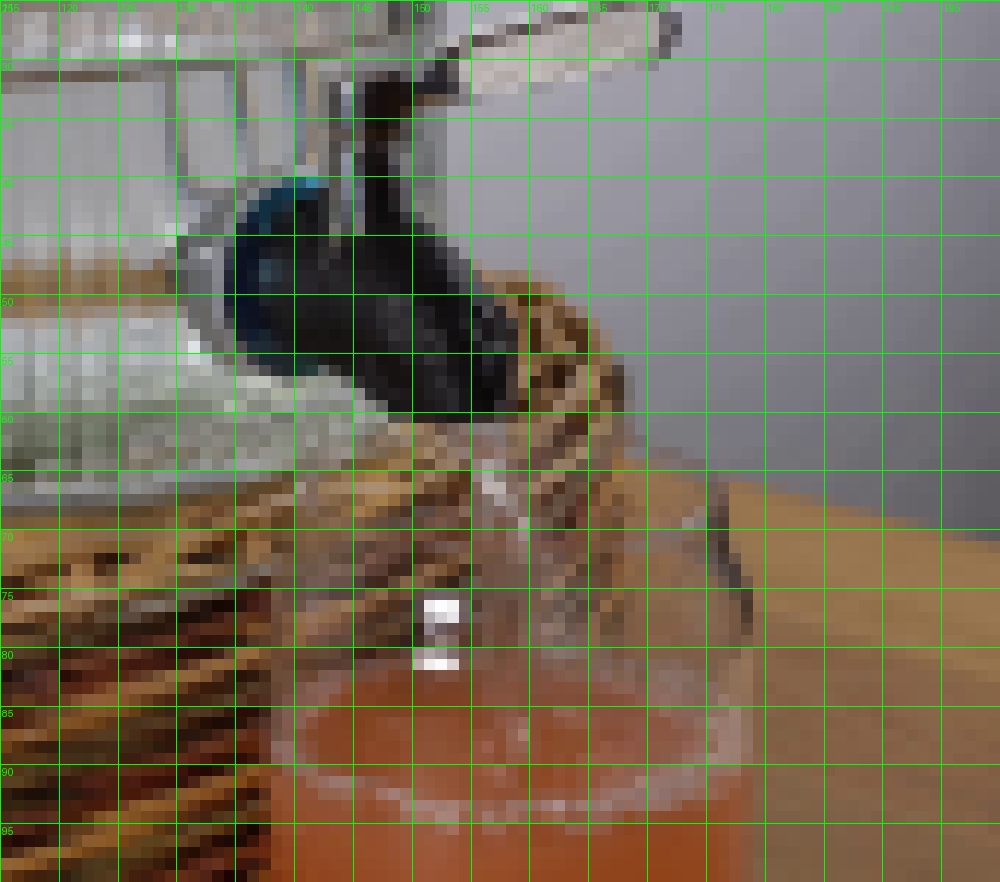
视觉工具实际返回图片 6
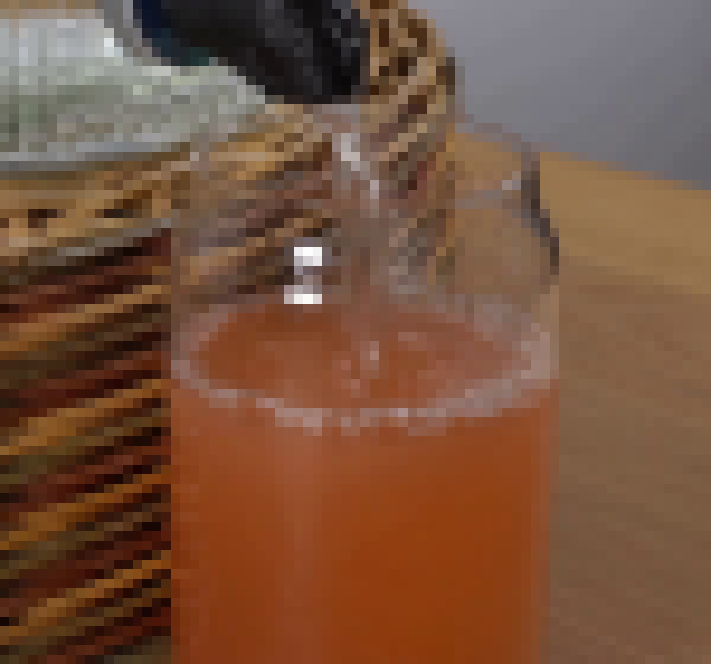
视觉工具实际返回图片 7
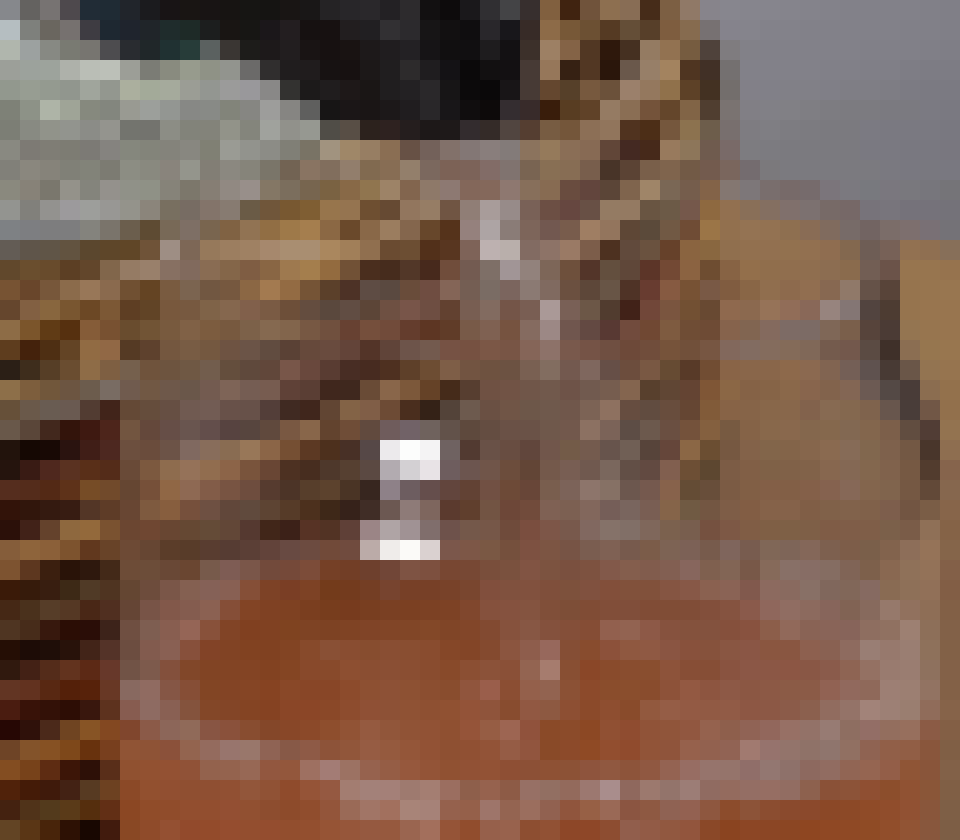
视觉工具实际返回图片 8
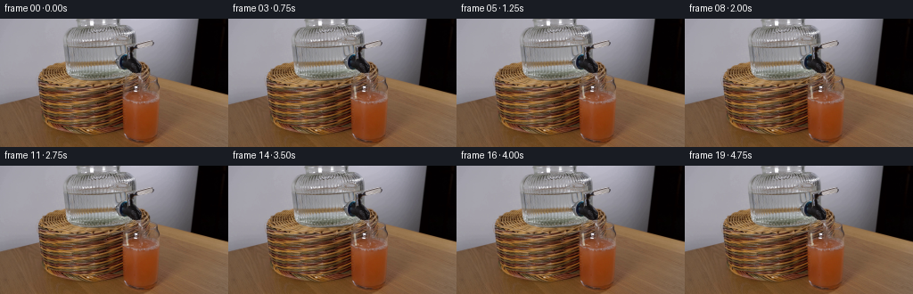
视觉工具实际返回图片 9
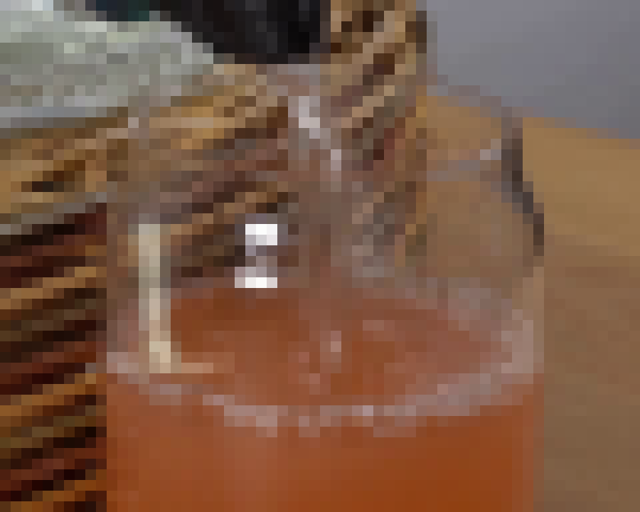
视觉工具实际返回图片 10
视觉工具实际返回图片 11
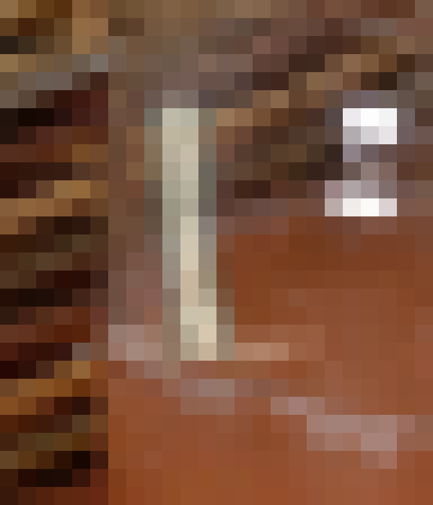
视觉工具实际返回图片 12
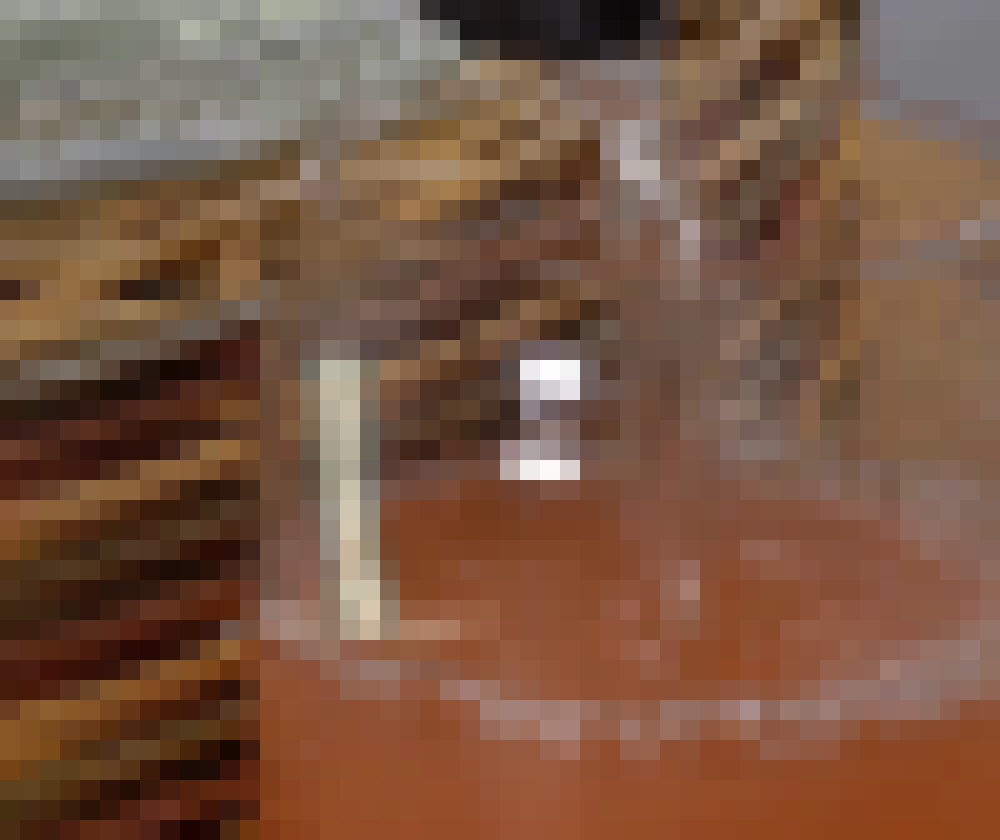
视觉工具实际返回图片 13
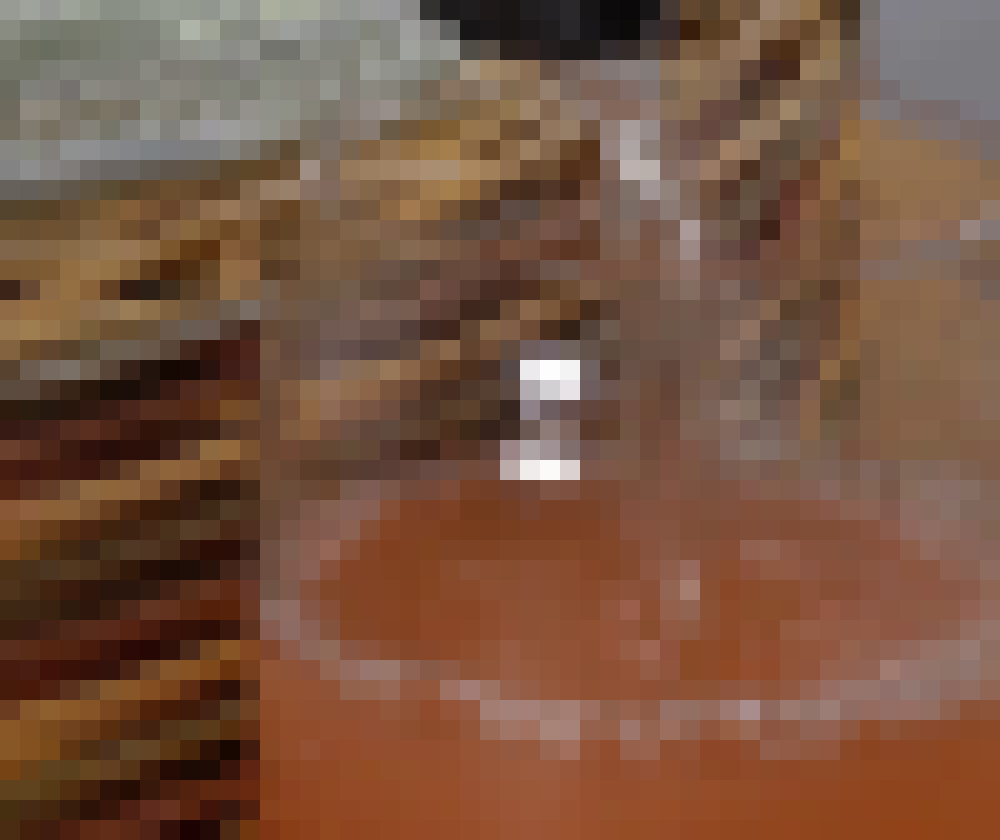
视觉工具实际返回图片 14
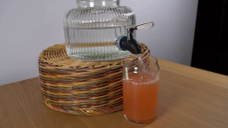
视觉工具实际返回图片 15

视觉工具实际返回图片 16
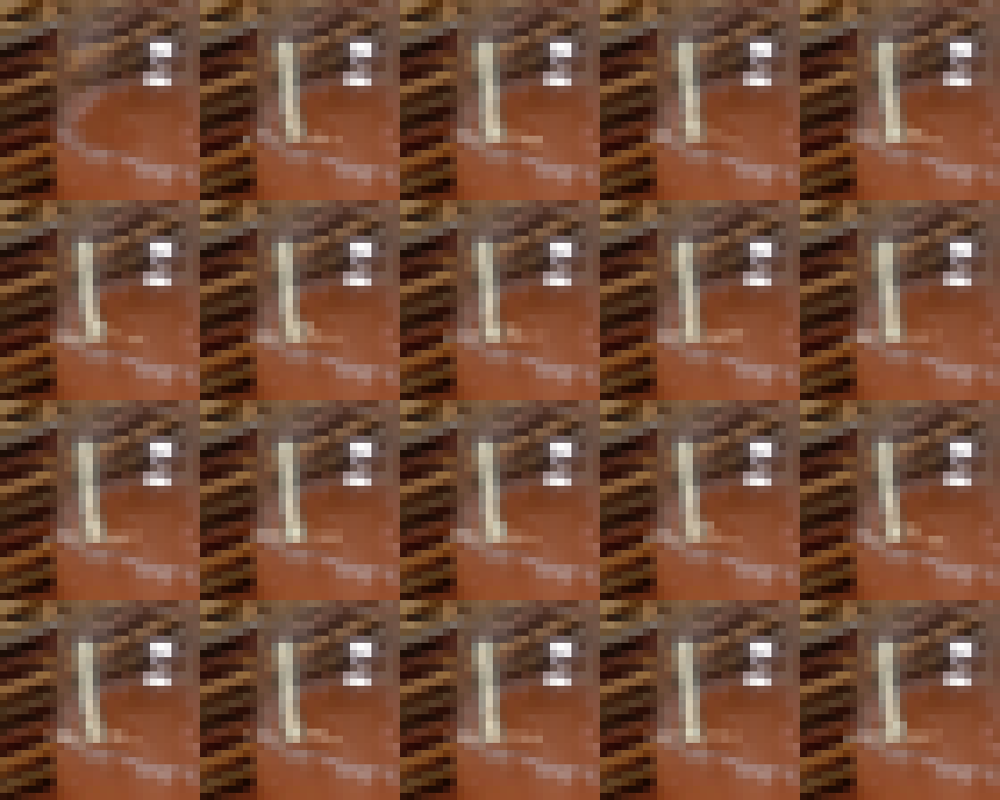
保存候选 3 份；完成命令 30 次；可验证图片返回 16 张。原始 API 响应与完整日志保留在本地。